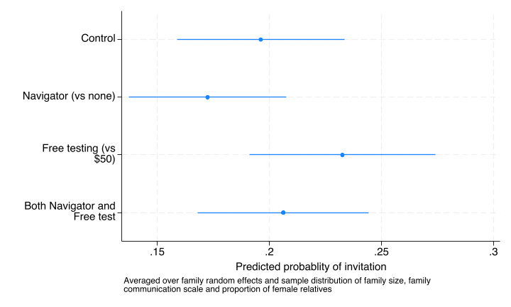

The first pre-specified secondary outcome was whether or not each eligible relative was invited to the study by the index patient enrolled in the study.
It is somewhat counterintuitive that the Navigator intervention has a point effect odds ratio less than one, although the confidence interval considerably overlaps with one so it is most consistent with no difference.
Marginal probability of testing for each intervention group
code
run sub/load_data.dorun sub/create_vars.doestuse sub/invite_resultestimatesesample:invite costarm navarm c_relatives i2scale_std female qui margins costarm#navarm,postcoefplot,coeflabels(0.costarm#0.navarm ="Control"/// 0.costarm#1.navarm ="Navigator (vs none)" 1.costarm#0.navarm ="Free testing (vs $50)"/// 1.costarm#1.navarm ="Both Navigator and Free test",wrap(20)) ///xtitle(Predicted probablity of invitation) ///note("Averaged over family random effects and sample distribution of family size, family "///"communication scale and proportion of female relatives" ) graphexport"img/invite_group_pred.png",replace

Causal effect (risk difference) for each intervention
code
run sub/load_data.dorun sub/create_vars.doestuse sub/invite_resultestimatesesample:invite costarm navarm c_relatives i2scale_std female * table invitedi"Invitation Cost when at control Navigation"labelvar invite "Navigator=0"margins r.costarm ,at(navarm=0)etable ,cstat(_r_b, nformat(%4.2f)) /// cstat(_r_ci, cidelimiter(", ") nformat(%4.2f)) marginsdi"Main results Navigation"labelvar invite "Cost=0"margins r.navarm ,at(costarm=0)etable ,cstat(_r_b, nformat(%4.2f)) /// cstat(_r_ci, cidelimiter(", ") nformat(%4.2f)) /// margins append column(dvlabel) ///title("Table: Difference in invitation rates for each intervention ") ///notes("Predicted probability at the control condition of the other intervention") ///export(sub/table_invite.html,replace)
Table of group outcomes and causal effect combined
code
run sub/load_data.dorun sub/create_vars.doestuse sub/invite_resultestimatesesample:invite costarm navarm c_relatives i2scale_std female * combined invite result tablecollect clearcollect _r_b _r_ci,tags(rowheader["Group means cost"]): margins costarm,at(navarm=0)collect _r_b _r_ci,tags(rowheader["Difference (cost)"]): margins r.costarm,at(navarm=0)collect _r_b _r_ci,tags(rowheader["Group means navigator"]): margins navarm,at(costarm=0)collect _r_b _r_ci,tags(rowheader["Difference (navigator)"]): margins r.navarm,at(costarm=0)collect style cell, nformat(%5.2f)// Capture the number of familieslocal fam_num=e(N_g)[1,1]local obs_num = e(N)// Add Number of families row first (before Observations)collect get num_families = `fam_num', tags(row[num_families])collect labellevelsrow num_families "Number of index patients", modifycollect recode result num_families=_r_bcollect style cell row[num_families], nformat(%5.0f)// Add "Observations" rowcollect get num_obs = `obs_num'', tags(row1[num_obs])collect labellevels row1 num_obs "Number of relatives", modifycollect recode result num_obs=_r_bcollect style cell row1[num_obs], nformat(%5.0f)collect style cell result[_r_ci], sformat("[%s]") cidelimiter(", ")collect style cell result[_r_b], halign(center)collect labellevels colname 1.costarm "Free (no navigator)" 0.costarm "Low-cost (no navigator)" r1vs0.costarm "Free vs low-cost" 1.navarm "Navigator (low-cost)" 0.navarm "No Navigator (low cost)" r1vs0.navarm "Navigator vs none"collect labellevels result _r_b "Proportion",modifycollect layout (rowheader#colname row row1) (result) collect previewcollect save sub/table_invite_result,replacecollect export sub/table_invite_result.html,replace